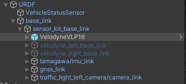
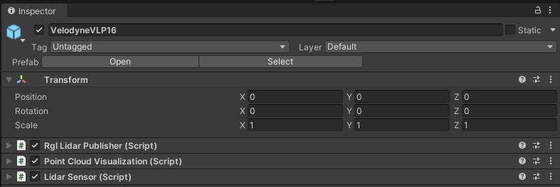
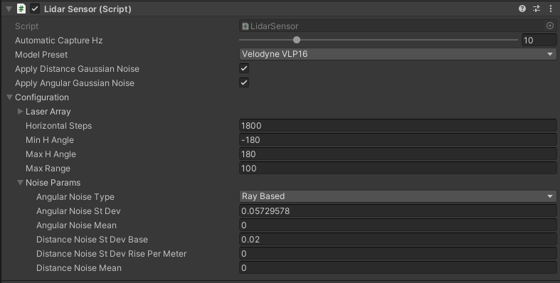
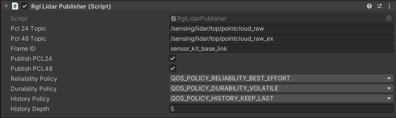
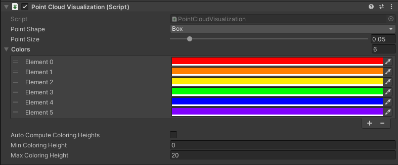
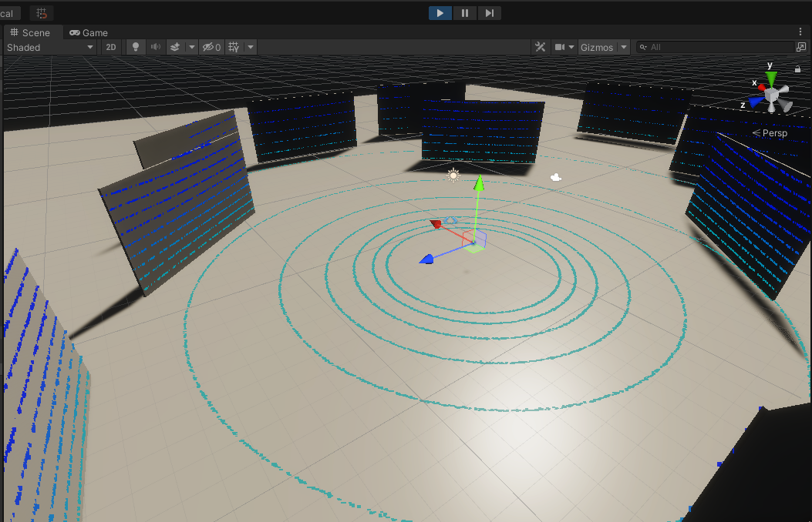
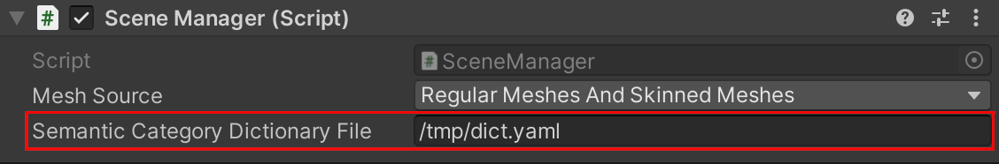

LidarSensor
Introduction
LidarSensor is the component that simulates the LiDAR (Light Detection and Ranging) sensor.
LiDAR works by emitting laser beams that bounce off objects in the environment, and then measuring the time it takes for the reflected beams to return, allowing the sensor to create a 3D map of the surroundings.
This data is used for object detection, localization, and mapping.
LiDAR in an autonomous vehicle can be used for many purposes. The ones mounted on the top of autonomous vehicles are primarily used
- to scan the environment for localization in space
- to detect and identify obstacles such as approaching vehicles, pedestrians or other objects in the driving path.
LiDARs placed on the left and right sides of the vehicle are mainly used to monitor the traffic lane and detect vehicles moving in adjacent lanes, enabling safe maneuvers such as lane changing or turning.
LidarSensor component is a part of RGLUnityPlugin that integrates the external RobotecGPULidar (RGL) library with Unity. RGL also allows to provide additional information about objects, more about it here.
Use RGL in your scene
If you want to use RGL in your scene, make sure the scene has an SceneManager component added and all objects meet the usage requirements.
RGL default scenes
If you would like to see how LidarSensor works using RGL or run some tests, we encourage you to familiarize yourself with the RGL test scenes section.
Supported LiDARs
The current scripts implementation allows you to configure the prefab for any mechanical LiDAR. You can read about how to do it here. MEMS-based LiDARs due to their different design are not yet fully supported.
Prefabs
Prefabs can be found under the following path:
Assets/AWSIM/Prefabs/RobotecGPULidars/*
The table of available prefabs can be found below:
| LiDAR | Path | Appearance |
|---|---|---|
| HESAI Pandar40P | HesaiPandar40P.prefab |
 |
| HESAI PandarQT64 | HesaiPandarQT64.prefab |
 |
| Ouster OS1-64 | OusterOS1-64.prefab |
 |
| Velodyne VLP-16 | VelodyneVLP16.prefab |
 |
| Velodyne VLC-32C | VelodyneVLP32C.prefab |
 |
| Velodyne VLS-128-AP | VelodyneVLS128.prefab |
 |
Link in the default Scene

LidarSensor is configured in default vehicle EgeVehicle prefab.
It is added to URDF object as a child of sensor_kit_base_link.
LidarSensor placed in this way does not have its own frame, and the data is published relative to sensor_kit_base_link.
More details about the location of the sensors in the vehicle can be found here.
A detailed description of the URDF structure and sensors added to prefab Lexus RX450h 2015 is available in this section.
Additional LiDARs
For a LiDAR placed on the left side, right side or rear, an additional link should be defined.
Components and Resources

The LiDAR sensor simulation functionality is split into three components:
- Lidar Sensor (script) - provides lidar configuration, creates RGL pipeline to simulate lidar, and performs native RGL raytrace calls,
- Rgl Lidar Publisher (script) - extends RGL pipeline with nodes to publish ROS2 messages.
- Point Cloud Visualization (script) - visualizes point cloud collected by sensor.
Moreover, the scripts use Resources to provide configuration for prefabs of supported lidar models:
- LaserModels - provides a list of supported models,
- LaserArrayLibrary - provides data related to laser array construction for supported models,
- LaserConfigurationLibrary - provides full configuration, with ranges and noise for supported models.
These are elements of the RGLUnityPlugin, you can read more here.
Lidar Sensor (script)

This is the main component that creates the RGL node pipeline for the LiDAR simulation.
The pipeline consists of:
- setting ray pattern,
- transforming rays to represent pose of the sensor on the scene,
- applying Gaussian noise,
- performing raytracing,
- removing non-hits from the result point cloud,
- transforming point cloud to sensor frame coordinate system.
LidarSensor provides public methods to extend this pipeline with additional RGL nodes.
In this way, other components can request point cloud processing operations and receive data in the desired format.
LidarSensor component in the output provides 3 types of data.
Two of them: rosPCL24 and rosPCL48 are point clouds that are published by the RglLidarPublisher component.
Whereas vector onlyHits is used for visualization by the PointCloudVisualization component.
Elements configurable from the editor level
Automatic Capture Hz- the rate of sensor processing (default:10Hz)Model Preset- allows selecting one of the built-in LiDAR models (default:RangeMeter)Apply Distance Gaussian Noise- enable/disable distance Gaussian noise (default:true)Apply Angular Gaussian Noise- enable/disable angular Gaussian noise (default:true)- Configuration:
Laser Array- geometry description of lidar array, should be prepared on the basis of the manual for a given model of LiDAR (default: loaded fromLaserArrayLibrary)Horizontal Steps- the number of laser array firings betweenMin H AngleandMax H Angle(default:1)Min H Angle- minimum horizontal angle, left (default:0)Max H Angle- maximum horizontal angle, right (default:0)Max Range- maximum range of the sensor (default:40)- Noise Params:
Angular Noise Type- angular noise type
(default:Ray Based)Angular Noise St Dev- angular noise standard deviation in degree
(default:0.05729578)Angular Noise Mean- angular noise mean in degrees
(default:0)Distance Noise St Dev Base- distance noise standard deviation base in meters
(default:0.02)Distance Noise Rise Per Meter- distance noise standard deviation rise per meter
(default:0)Distance Noise Mean- distance noise mean in meters
(default:0)
Output Data
| Category | Type | Description |
|---|---|---|
| onlyHits | Vector3[ ] | Vertices for visualization in Unity's coordinate system |
| rosPCL24 | byte[ ] | Vertices for publishing Autoware format pointcloud in ROS2 coordinate system |
| rosPCL48 | byte[ ] | Vertices for publishing extended Autoware format pointcloud in ROS2 coordinate system |
Rgl Lidar Publisher (script)

RglLidarPublisher extends the main RGL pipeline created in LidarSensor with RGL nodes that produce point clouds in specific format and publish them to the ROS2 topic.
Thanks to the ROS2 integration with RGL, point clouds can be published directly from the native library.
RGL creates ROS2 node named /RobotecGPULidar with publishers generated by RGL nodes.
Currently, RglLidarPublisher implements two ROS2 publishers:
- rosPCL24 - a 24-byte point cloud format used by Autoware
- rosPCL48 - a 48-byte extended version point cloud format used by Autoware
Details on the construction of these formats are available in the PointCloudFormats under the following path:
Assets/AWSIM/Scripts/Sensors/LiDAR/PointCloudFormats.cs
rosPCL48 format
For a better understanding of the rosPCL48 format, we encourage you to familiarize yourself with the point cloud pre-processing process in Autoware, which is described here.
Elements configurable from the editor level
Pcl 24 Topic- the ROS2 topic on which thePointCloud2message is published
(default:"lidar/pointcloud")Pcl 48 Topic- the ROS2 topic on which thePointCloud2message is published
(default:"lidar/pointcloud_ex")Frame ID- frame in which data are published, used inHeader(default:"world")Publish PCL24- if publish cloud PCL24 (default:true)Publish PCL48- if publish cloud PCL48 (default:true)Qos Settings- Quality of service profile used in the publication
(default:Best effort,Volatile,Keep last,5)
Published Topics
- Frequency:
10Hz - QoS:
Best effort,Volatile,Keep last/5
| Category | Topic | Message type | frame_id |
|---|---|---|---|
| PointCloud 24-byte format | /lidar/pointcloud |
sensor_msgs/PointCloud2 |
world |
| PointCloud 48-byte format | /lidar/pointcloud_ex |
sensor_msgs/PointCloud2 |
world |
Point Cloud Visualization (script)

A component visualizing a point cloud obtained from RGL in the form of a Vector3 list as colored points in the Unity scene.
Based on the defined color table, it colors the points depending on the height at which they are located.
The obtained points are displayed as the vertices of mesh, and their coloring is possible thanks to the use of PointCloudMaterial material which can be found in the following path:
Assets/RGLUnityPlugin/Resources/PointCloudMaterial.mat
Point Cloud Visualization preview:

Elements configurable from the editor level
Point Shape- the shape of the displayed points (default:Box)Point Size- the size of the displayed points (default:0.05)Colors- color list used depending on height
(default:6colors:red, orange, yellow, green, blue, violet)Auto Compute Coloring Heights- automatic calculation of heights limits for a list of colors (default:false)Min Coloring Height- minimum height value from which color matching is performed, below this value all points have the first color from the list (default:0)Max Coloring Height- maximum height value from which color matching is performed, above this value all points have the last color from the list (default:20)
Read material information
To ensure the publication of the information described in this section, GameObjects must be adjusted accordingly. This tutorial describes how to do it.
Intensity Texture
RGL Unity Plugin allows assigning an Intensity Texture to the GameObjects to produce a point cloud containing information about the lidar ray intensity of hit. It can be used to distinguish different levels of an object's reflectivity.
Output data
Point cloud containing intensity is published on the ROS2 topic via RglLidarPublisher component. The intensity value is stored in the intensity field of the sensor_msgs/PointCloud2 message.
Instance segmentation
RGL Unity Plugin allows assigning an ID to GameObjects to produce a point cloud containing information about hit objects. It can be used for instance/semantic segmentation tasks.
LidarInstanceSegmentationDemo
If you would like to see how LidarInstanceSegmentationDemo works using RGL or run some tests, we encourage you to familiarize yourself with this section.
Output data
Point cloud containing hit objects IDs is published on the ROS2 topic via RglLidarPublisher component. It is disabled by default. Properties related to this feature are marked below:

Dictionary mapping
The resulting simulation data contains only the id of objects without their human-readable names. To facilitate the interpretation of such data, a function has been implemented to save a file with a dictionary mapping instance ID to GameObject names. It writes pairs of values in the yaml format:
- The name of the GameObject
- Category ID of
SemanticCategorycomponent
To enable saving dictionary mapping set output file path to the Semantic Category Dictionary File property in the Scene Manager component:

The dictionary mapping file will be saved at the end of the simulation.